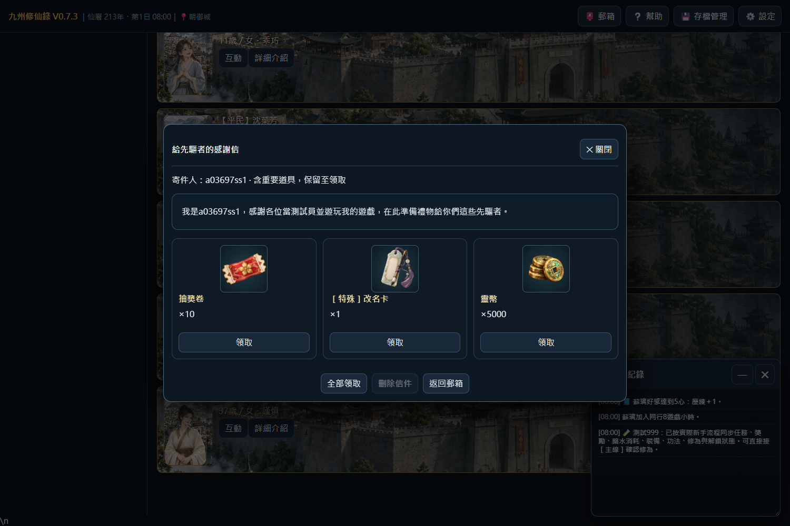
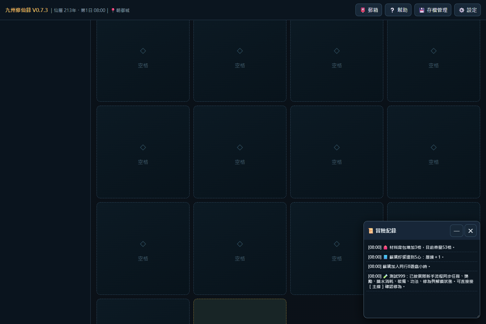
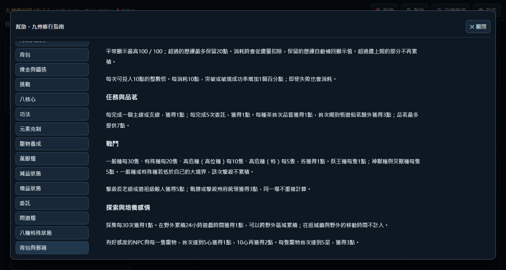

開始遊玩0.7.3 · 歷代更新紀錄請見遊戲內「更新內容」
圖鑑與主線經玩家驗收通過，並獲明確授權升為正式版。既有已完成內容增量保留。本次49項新增與發布驗收、81項回歸檢查，共130項通過；舊版三份規則不變，三個可遊玩版本保留原始程式雜湊。
背包50／50／30／30／30初始容量與固定格，擴充格一次增加指定分頁3格；郵箱10封、7遊戲日到期、重要道具保管；舊角色先驅者感謝信，抽獎卷10、改名卡1、靈幣5000。
全部歷練來源採本輪規則，保留100＋20池、整10點投入；每種紀念品首次1、月玉珮5。蘇璃、蘇項及未來可結婚夥伴共用專屬背景規則。背包、功法及全部製作類型採固定格；細節區可捲動，操作保留。
紀念品漏發歷練；月玉珮合成漏查紀念品欄；品茗7點上限誤計為角色總歷練；多敵歷練漏算；幫助切換回頂與冒險日誌遮擋。前輪24項修正中的第3項已補完，其餘保留。
| 項目 | 結果與程式位置 | 證據 |
|---|---|---|
| 歷練與紀念品 | 已完成；experience1019.js。領取、合成、存讀檔、溢出上限、茶館、任務、好感、孵化與升星。 | 驗收紀錄 |
| 戰鬥歷練 | 已完成；experience1019.js。A線真實三隻青臭蟲退出與逐隻計數；種類／大境界限制及防重複。 | 驗收紀錄 |
| 夥伴背景 | 已完成；partner-background1019.js。蘇璃、蘇項隊伍與夥伴管理圖片實載，後續可結婚對象自動套用。 | 驗收紀錄 |
| 背包容量、固定格、擴充與郵箱 | 已完成；inventory-mail1019.js／inventory-layout1019.js。滿50格、擴充3格、滿10封、7日到期、重要道具、獎勵與存讀檔。 | 驗收紀錄 |
| 正常取得流程 | 已完成；inventory-mail1019.js。真實野外戰鬥、公共煉製、NPC收禮均可觸發寄存。 | 驗收紀錄 |
| 幫助捲動 | 已完成；help-scroll1019.js。切換保持側欄位置，回到舊條目恢復內文位置。 | 驗收紀錄 |
正式0.7.3延續現有0.7.3測試存檔。若沒有0.7.3自動存檔，會以副本帶入原版自動存檔；原版手動槽與原始資料保留，也可從存檔管理讀取舊紀錄。紀念品以目前持有、NPC領取紀錄、已完成合成及首通證據補發一次；舊主支線、好感與升星既有門檻不重播，避免無法確認歷史發放時重複獎勵。
0.7.0／0.7.1／0.7.2保留原始發布程式，另加獨立存檔副本入口。壓縮只用於傳輸，載入後核對原始SHA-256，不更換程式內容。
使用內建image_gen；4張1254×1254透明圖，原生解析度、可見RGB與透明度無損WebP。
先驅者感謝信與靈幣圖片

材料背包固定格與擴充

幫助切頁保留捲動
